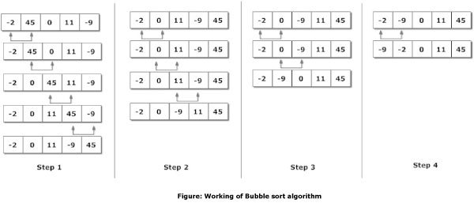

Sorting Algorithms
DBC Phase 0 Week 8
January 30, 2015
Sorting is putting a list of objects in order, usually numbers that you want to order from smallest to largest. There are many different algorithms with differing complexity and efficiency. Here I will cover merge sort, quick sort, and bubble sort.
Merge sort

Merge sort is a recursive algorithm, meaning it calls itself with smaller input values. Merge sort first divides the unsorted list in half, then keeps dividing it up into smaller lists until each item is on its own. Then it joins them back up in the right order. Merge sort is good for large lists as it does not have to traverse the whole list multiple times.
Quick sort

Quick sort is also a recursive algorithm. With quick sort you choose a "pivot" value to start with-usually you choose the middle value. You then set indices on either side of the pivot and compare their values to the pivot value, if they are on the wrong side, you swap the two values, then move on to the next values until the left index surpasses the right index. You then divide the list in two at that point and use quick sort on each sub-list, and keep doing that until its sorted, then join them back up. Quick sort can be even faster than merge sort when dealing with large lists.
Bubble sort

Bubble sort goes through the list and compares each item with the one next to it, and swaps them into the correct order. For Example, if you had 8 and 3 next to each other, it would swap them so that 3 comes before 8. It then moves on to the next item, and so on until it reaches the end of the list. It will then move back to the front of the list and do the comparisons again, until it can go through the whole list without making any swaps. This algorithm is better for short lists, where traversing the whole list multiple times won't take too long. It's very inefficient for large lists, because traversing them multiple times will take a long time.
For an additional reference, check out these videos using folk dance to illustrate different sorting algorithms. Click here.